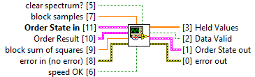
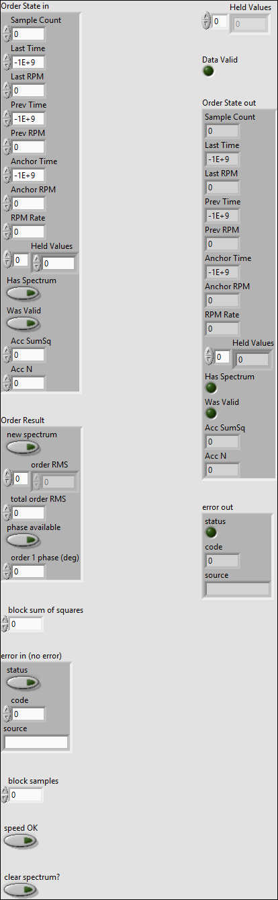
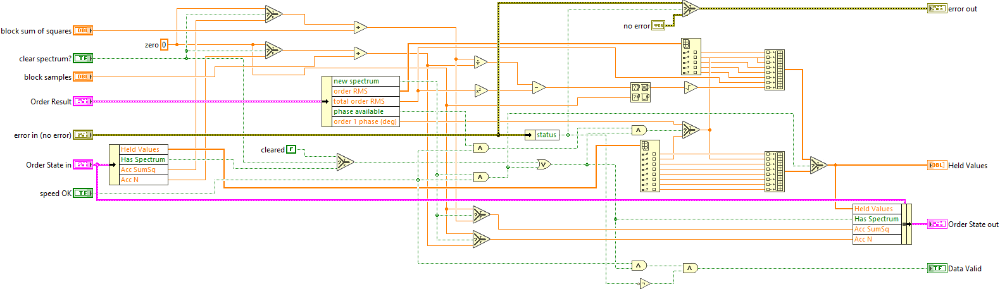

Order Analysis helper. Holds the order values between spectra and while Data Valid = 0, and computes Data Valid and Residual RMS. Held Values = [Order 1 RMS, Order 1 Phase, Order 2, Order 3.57, Order 4, Order 24, Total Order RMS, Residual RMS]. Values update only on a new spectrum while speed OK, and the phase only once a spectrum exists since the last (re)start. Residual RMS = sqrt(max(0, time-domain mean square since the previous spectrum - Total Order RMS^2)). Data Valid = speed OK AND a spectrum since the last restart or speed recovery AND no error.


